Data as of November 14, 2026 (Korea time), US close of Nov 13 · stayhungryasi.com
Conventions: figures are facts as reported by the sources. 'Assumptions' and scenario odds are the author's subjective judgment. On the people involved, reported facts and allegations are kept apart. Not investment advice.
The key points in 11 cards. Tap an image to enlarge it.
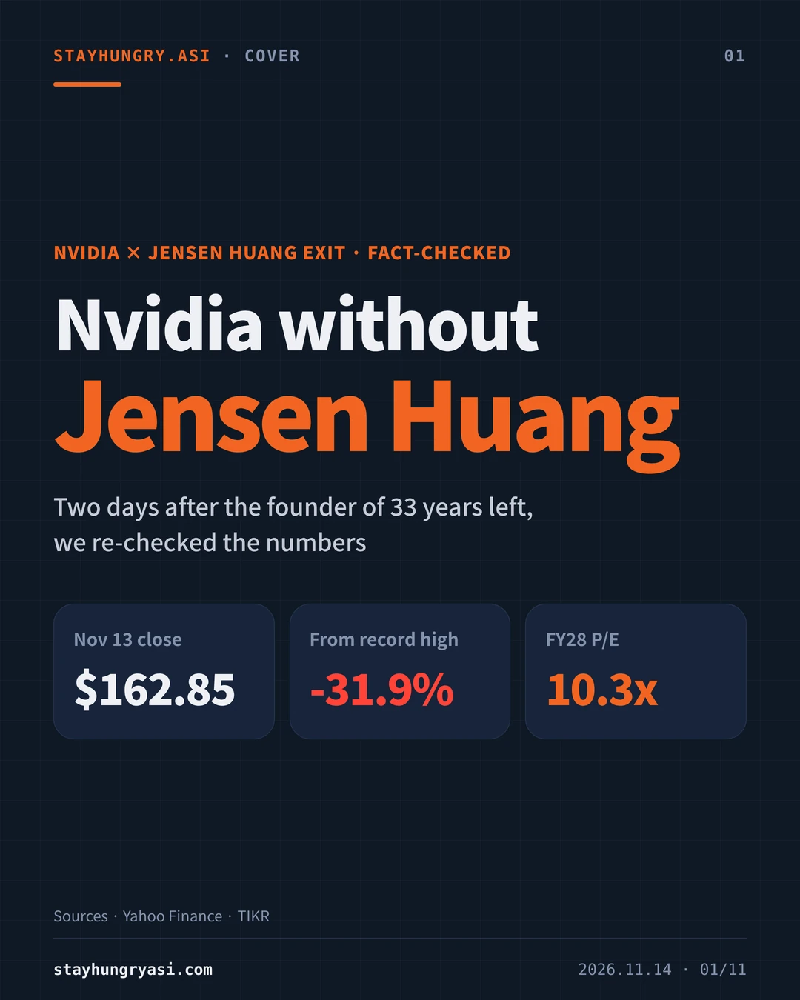
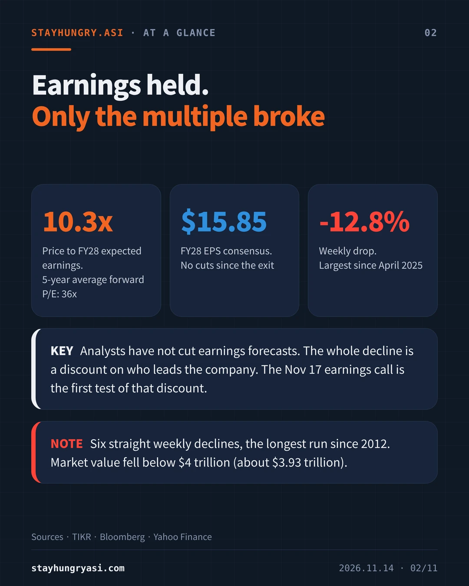
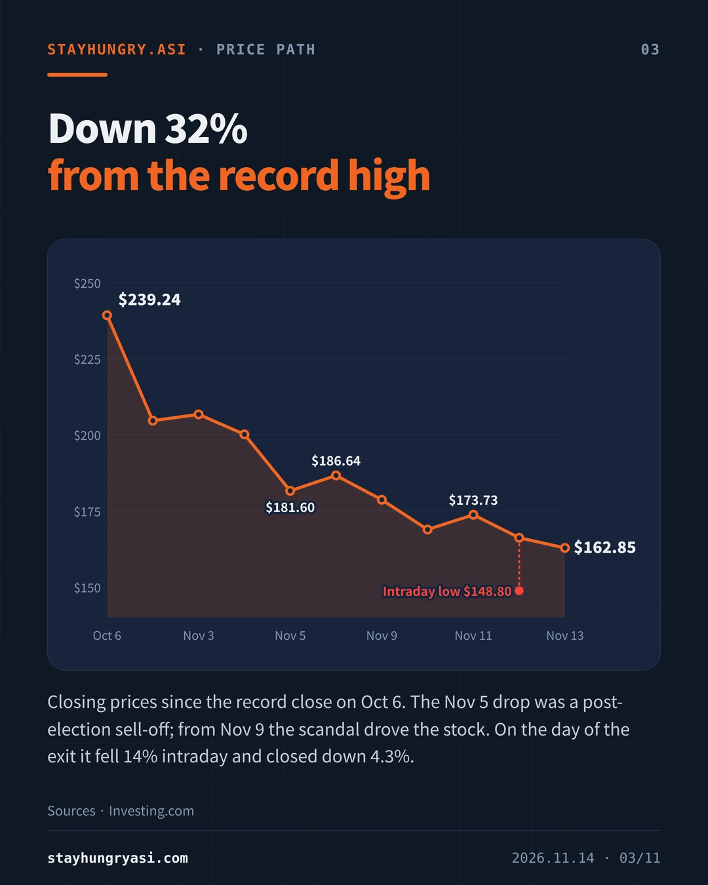
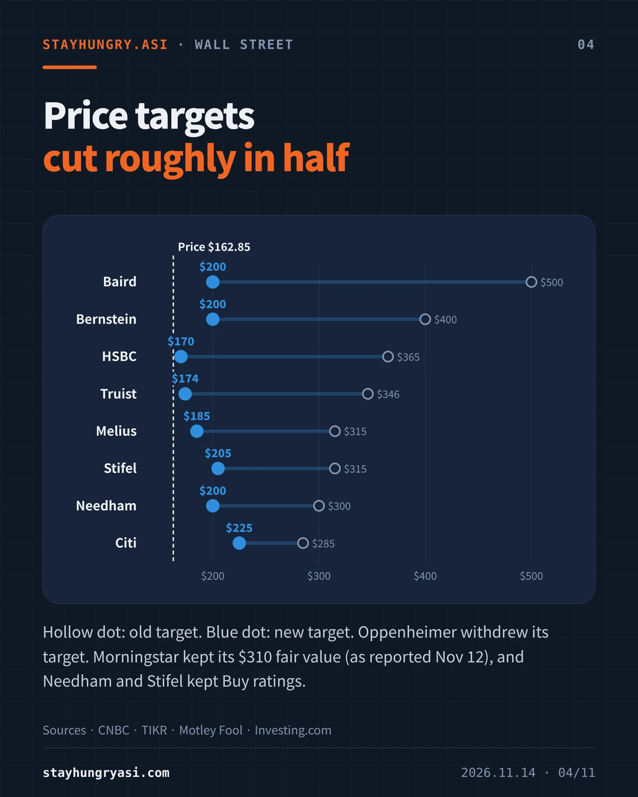
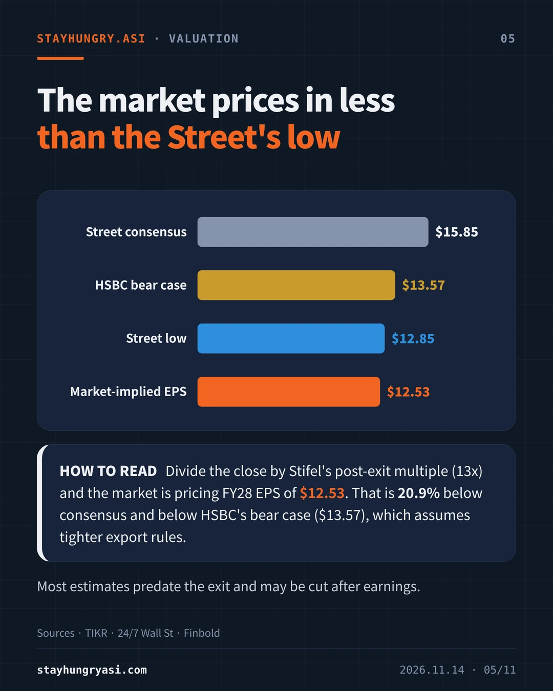
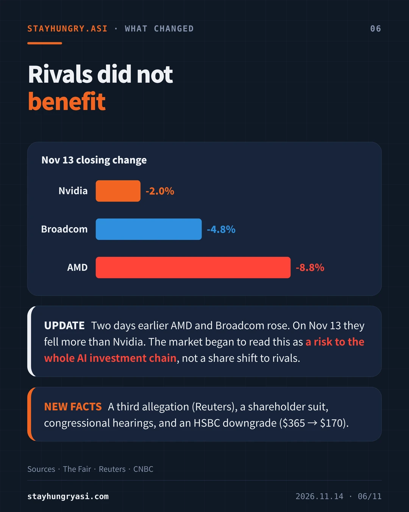
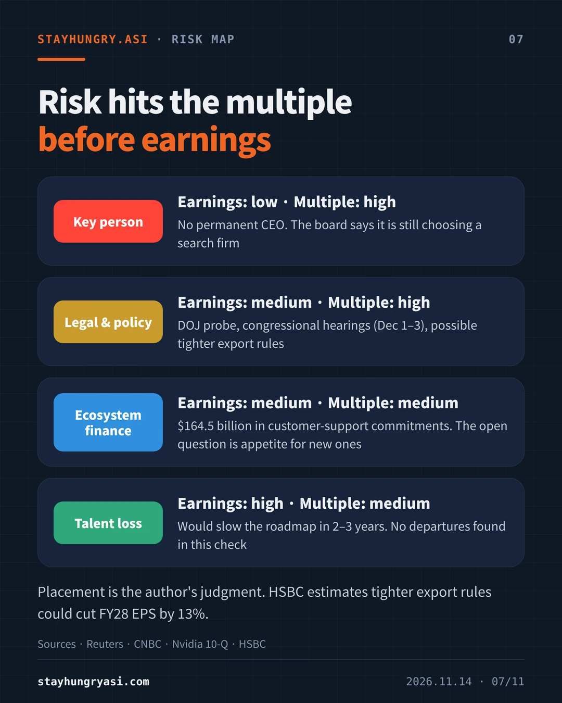
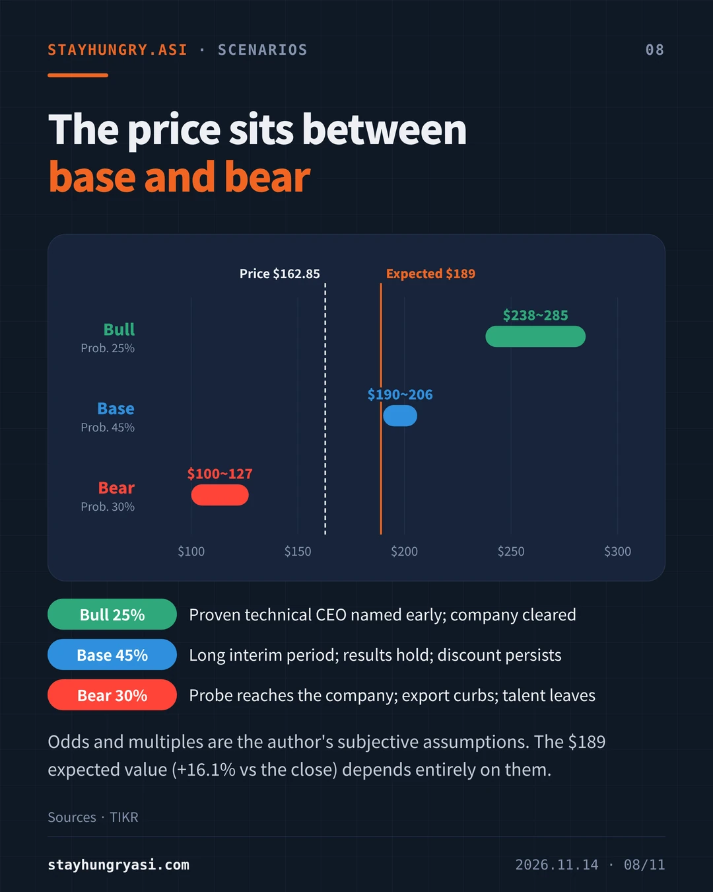
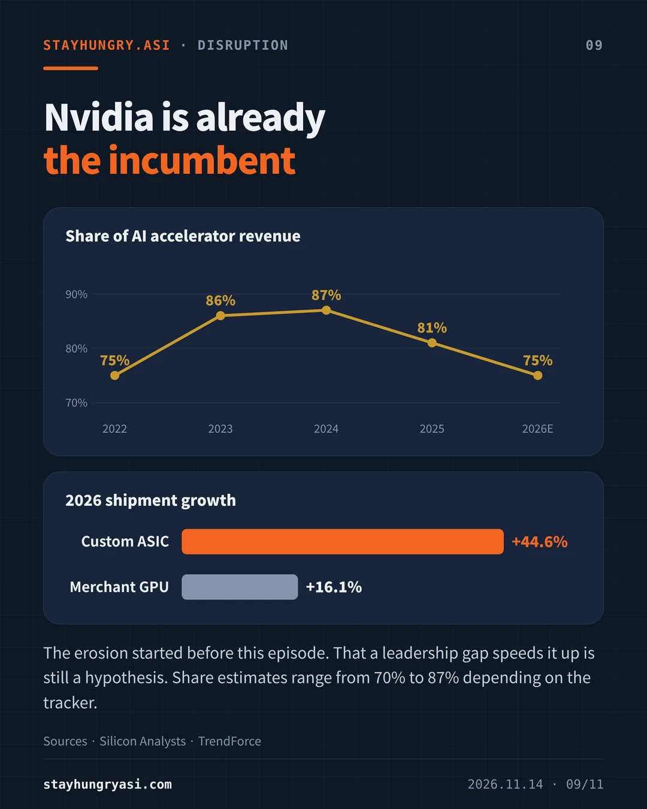
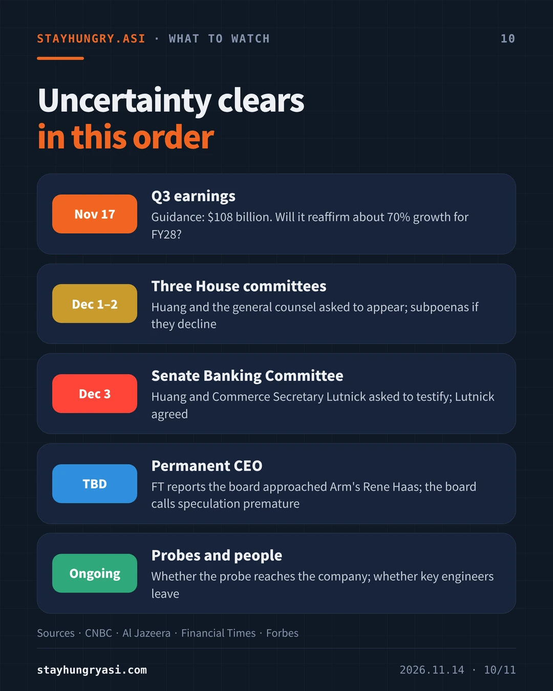
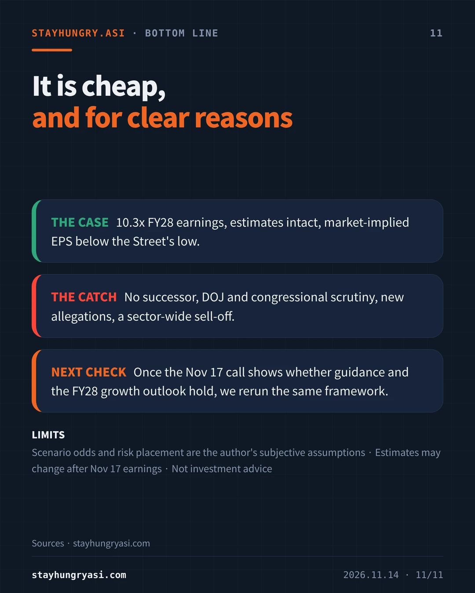
| Date | Event |
|---|---|
| 2026-10-06 | Record close of $239.24 |
| 2026-11-05 | Down 9.26% to $181.60 in a post-election sell-off |
| 2026-11-08 | Huang admits an affair and apologizes to employees. The board opens an independent investigation into whether he was the target of a foreign intelligence effort |
| 2026-11-11 | After the close, reports say the board is preparing to remove him. Shares fall 8.6% after hours |
| 2026-11-12 | Resignation announced. Shares hit $148.80 intraday and close at $166.19 (down 4.34%) |
| 2026-11-13 | HSBC downgrades. Close of $162.85 (down 2.01%); down 12.8% on the week |
The company gave no reason for the resignation, and no national-security wrongdoing has been established. The US attorney general said on Nov 12 that the Justice Department had not determined whether the person involved is a spy. After the resignation, Reuters reported an alleged relationship with another employee.
The 12.8% weekly drop is the largest since April 2025, and six straight weekly declines is the longest run since 2012. Market value is about $3.93 trillion, below $4 trillion. At least 9 firms cut the stock to Hold-type ratings.
| Firm | Old target | New target | Rating |
|---|---|---|---|
| Baird | $500 | $200 | Neutral |
| Bernstein | $400 | $200 | Market Perform |
| HSBC | $365 | $170 | Hold |
| Truist | $346 | $174 | Hold |
| Melius | $315 | $185 | Hold |
| Stifel | $315 | $205 | Buy (kept) |
| Needham | $300 | $200 | Buy (kept) |
| Citi | $285 | $225 | Not stated |
Oppenheimer withdrew its price target. Morningstar kept its fair value of $310 (as reported on Nov 12). Reports of HSBC's old target differ ($365 and $375); this report follows the majority.
| Item | FY28 EPS |
|---|---|
| Street consensus (15.77 to 15.93 depending on the source) | $15.85 |
| HSBC bear case (tighter export rules) | $13.57 |
| Lowest analyst estimate | $12.85 |
| Market-implied EPS (author's calculation) | $12.53 |
Market-implied EPS is the $162.85 close divided by the 13x multiple Stifel applied after the exit. It is 20.9% below consensus and below the lowest analyst estimate. The five-year average 12-month forward P/E was 36x. Most estimates predate the exit, however, and may be cut after the Nov 17 earnings report.
Until early trading on Nov 12, AMD and Broadcom were rising. On Nov 13 AMD fell 8.75% and Broadcom 4.76%, both more than Nvidia. One reading is that the market began to price a risk to the whole AI investment chain rather than a shift in share (author's judgment). Nvidia has supported customers' data-center buildouts with guarantees and commitments; as of its July 2026 quarterly filing, customer-support commitments total $164.5 billion.
| Risk | Impact (author's judgment) | Where it stands |
|---|---|---|
| Key person | Earnings: low · Multiple: high | No permanent CEO. The board says it is still choosing a search firm |
| Legal & policy | Earnings: medium · Multiple: high | DOJ probe, congressional hearings (Dec 1–3), possible tighter export rules |
| Ecosystem finance | Earnings: medium · Multiple: medium | $164.5 billion in customer-support commitments. The open question is appetite for new ones |
| Talent loss | Earnings: high · Multiple: medium | Would slow the roadmap in 2–3 years. No departures found in this check |
HSBC estimates tighter export rules could cut FY28 EPS by 13%.
| Scenario | Odds | EPS assumption | Multiple | Price range | Conditions |
|---|---|---|---|---|---|
| Bull | 25% | $15.85 holds | 15–18x | $238~285 | Proven technical CEO named early; company cleared |
| Base | 45% | $15.85 holds | 12–13x | $190~206 | Long interim period; results hold; discount persists |
| Bear | 30% | Cut by 20–30% | 9–10x | $100~127 | Probe reaches the company; export curbs; talent leaves |
The probability-weighted value is $189, 16.1% above the close. It depends entirely on the assumptions above and is not a price target.
Nvidia's share of AI accelerator revenue is estimated to slip from about 87% in 2024 to about 75% in 2026 (Silicon Analysts). For 2026, shipments of custom ASICs are forecast to grow 44.6% against 16.1% for merchant GPUs (TrendForce). The erosion started before this episode. That a leadership gap speeds it up is a hypothesis, and the sharp fall in rivals on Nov 13 does not fit it. Share estimates range from 70% to 87% depending on the tracker.
| When | Event | What to check |
|---|---|---|
| Nov 17 | Q3 earnings | Guidance: $108 billion. Will it reaffirm about 70% growth for FY28? |
| Dec 1–2 | Three House committees | Huang and the general counsel asked to appear; subpoenas if they decline |
| Dec 3 | Senate Banking Committee | Huang and Commerce Secretary Lutnick asked to testify; Lutnick agreed |
| TBD | Permanent CEO | FT reports the board approached Arm's Rene Haas; the board calls speculation premature |
| Ongoing | Probes and people | Whether the probe reaches the company; whether key engineers leave |